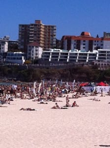

Surf Sho, the world's biggest aerial surf event @ Bondi Beach 13/3/11
The water was superb, and I felt really blessed to live in such a lovely place, to have such freedoms and social tolerance in our community. Especially with all the tragedy and sadness around our world today.
However, there’s been a feeling of emotional intensity in the last couple of weeks. Emotions have been running high for me and many others I know. Don’t know if there’s some metaphysical reason for this but in any case, I’ve been doing a lot of thinking about Bondi…the endless development that I see everywhere in my suburb, the turning of this suburb into a big tourist destination, the incessant changes to the buildings and businesses and the spiralling high cost of living here. I understand that Bondi has always been a tourist destination but it just seems to me that Waverley Council is concentrating its focus on the tourist and development dollar rather than looking after its residents.
Last week there was a story in the Daily Telegraph about how Waverley’s mayor is asking taxpayers to help maintain Bondi Beach. The comments posted against this story are worth a read!
I know that some people will see this as whingeing about Bondi. After all, I choose to live here. But I choose to live here because it is my home. It is where I grew up and where I want to raise my child. But what happens when you get pushed out of your home city or suburb because it becomes so unaffordable, so crowded and overly concerned with urban development, wealth and superficiality? You either leave, as many have done, to settle in other smaller and more affordable communities or you choose to stay. Well I have chosen to stay but lately I’ve been questioning this decision. How do you weigh up your emotional ties to a place versus the practical realities of life and the inevitability of change?
Then comes the news of yet another devastating natural disaster to hit our planet causing more tragedy for so many people – the earthquake and tsunami in Japan. And it makes me realise that I really have very little to complain about…except, like many others, learning how to cope with potential forced displacement, in a world going insane!
]]>